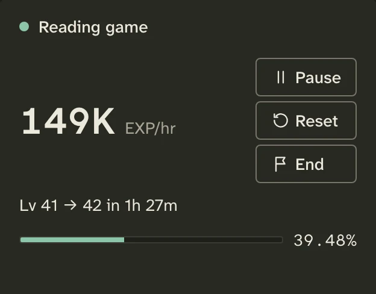
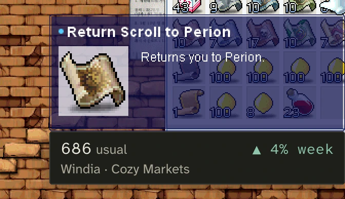
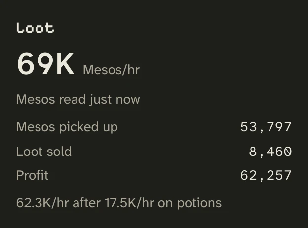

EXP
Track your EXP
See your EXP per hour, the time to your next level, and how every session went.


Prices
Check Free Market prices
Point at an item in your inventory, equipment window, an NPC shop or storage, cash items included, and MesoVibe shows its usual Free Market price right under the game's tooltip, with how much it moved this week.
- Prices from Cozy Markets, for your world: Windia or Zenith. Cozy Markets isn't part of MesoVibe.
- The usual price is an estimate from what players list and sell. A scrolled item can be worth much more or less.
- The first few items you point at teach MesoVibe the game's letters, only once. If a name stays unread, pick it in the Prices tab.
- MesoVibe downloads the price list from mesovibe.com a few times a day. The request carries no account, game or session data. Like any download, our host sees your IP address.

Loot
Track your loot
MesoVibe reads your meso total whenever your inventory, an NPC shop or storage is open. From it, it works out the mesos you pick up per hour, what shops pay when you sell your loot, and what you spend on potions, so you can see which map pays best.
- The Loot tab keeps every session's mesos per hour with the map you played, and your totals across all of them.
- Selling in town after you end a session still counts for it, up to 30 minutes later.
- Pot cost counts the Meat and Lemons you drink from your quick slots, at their shop price.
- MesoVibe reads only the mesos you carry, never what's in storage.
- Fernwick>> still need one more for the ant tunnel?
- Fernwick>> i can bring pots
- Fernwick<< yes! omw, ch 4
- Quillbeck>> thanks for the party earlier
- Sorrelbee : pots ready, heading left
- Fernwick : need 2 more horns for my quest
- Thistlewren : brb 1 min
- Sorrelbee : np, we'll hold the spot
- Mossbell : anyone up for a party quest tonight?
- Tinkerfern : i'm in after dinner
- Mossbell : 8pm, ch 2
- Quillbeck : count me in
Chat
Never miss a whisper
Megaphones and crowded towns bury the messages meant for you. MesoVibe pulls whispers, party chat and friend chat out of the game's chat box and gives each one its own tab.
- Each tab counts what came in while you were away.
- An optional overlay at the edge of the game shows the newest messages. Clicks pass straight through it.
- Chat stays in memory on your computer and is gone when you quit.
Common questions
Privacy and safety
Does MesoVibe collect my data?
No. There's no account to sign up for, no ads and no tracking. MesoVibe doesn't send your chat, your EXP, your screen or anything about you to us or anyone else.
The few things it keeps stay on your computer:
- Your settings.
- Your past sessions: EXP gained, mesos picked up and sold, potions drunk, time played and the maps you played. You can delete them anytime in Settings.
- The digits it has learned to read on the EXP bar and in your meso total, and the letters of item names in tooltips, so it can start reading right away next time.
- Small pictures of the map names it has read, cut from the minimap, so the panel can show which map a session was on. They stay when you delete your session history.
- For sessions from older versions, which counted items: each item's name, tab and NPC price, so those sessions can still list them. These stay when you delete your session history too.
- The latest Free Market prices, and the items you looked up last in the Prices tab.
Chat is never saved. MesoVibe holds it only while it's open, and it's gone when you quit. MesoVibe goes online only to check for updates and download them, and a few times a day to download Free Market prices from mesovibe.com. Neither request carries anything about you or the game.
What can MesoVibe see?
Only the MapleStory window. It can't see your other apps, your browser or your desktop.
Inside the game, it reads a few spots: the EXP bar, the HP and MP numbers, the quick slots, the chat box, the map's name on the minimap, and your meso total while your inventory, an NPC shop or storage is open. With "Prices next to item tooltips" on, it also reads the name in the tooltip of the item you point at. It doesn't record video of your game.
You can check this yourself: open "What MesoVibe sees" in the app to see exactly what it's reading right now.
Why does my Mac ask for Screen Recording permission?
A Mac asks before any app can see another app's window. Streaming and screen-sharing apps ask for the same thing. MesoVibe uses it to see the MapleStory window and nothing else.
Will MesoVibe ask for my Nexon login?
Never. MesoVibe doesn't need your account, email or password. If something calling itself MesoVibe asks for your login, it's a fake trying to steal your account.
Only download MesoVibe from this site or from our GitHub page.
Is MesoVibe safe to install?
Yes. MesoVibe is open source: all of its code is public on GitHub, so anyone can check what it does. The Mac version is signed and checked by Apple.
On Windows, you may see a blue "Windows protected your PC" box the first time. Windows shows it for new apps that not many people have installed yet. Choose "More info", then "Run anyway". We're working on signing the Windows version so Windows can confirm it comes from us.
Performance
Will MesoVibe slow down my game?
You shouldn't notice it. MesoVibe is built to stay out of your game's way:
- It's a small, separate app. It doesn't run inside the game.
- It glances at the game 4 times a second, not every time the game draws a new frame.
- Most of the time it copies only a strip along the bottom of the game, where the EXP bar, the HP and MP numbers, the quick slots and the chat box are. About once a second it copies the game's picture to look for your meso total, and more often while your inventory, a shop or storage is open, or while an item's tooltip is in view. After each map change and every 30 seconds, it copies it to read the map's name. It never copies your whole screen.
- When the game is minimized or closed, it stops looking and waits.
If you ever do notice a slowdown, turn on Safe mode in Settings and tell us on GitHub.
How big is MesoVibe?
About 5 MB to download, the size of a photo from your phone.
Many desktop apps carry a whole web browser inside them. MesoVibe uses the one already built into Windows and macOS, so it stays small.
Does MesoVibe run when I'm not playing?
Yes, quietly, so it can open when the game does. "Open with MapleStory Classic" starts out on: MesoVibe waits as a small icon by the clock (in the menu bar on a Mac) and appears when the game opens. While it waits, it only checks every couple of seconds for the game, which costs next to nothing.
Turn that off in Settings, and MesoVibe runs only when you open it.
Game settings
Which game sizes and screen modes work?
Windowed is the surest way to play with MesoVibe. You pick the size and the mode in the game's Options > Graphics.
- Windowed at any size: works on Windows and Mac.
- Full Screen at 1366×768: works on Windows and Mac.
- Full Screen at 1280×720 or 1024×768: works on a Mac. Not yet tested on Windows.
- Full Screen at 800×600: not yet tested.
On a Mac, only EXP tracking has been tested in Full Screen so far.
Pick your size and screen mode before you open MesoVibe. If you switch while it's running, EXP can stop counting: quit MesoVibe and open it again. If MesoVibe can't read the game at all, its card over the game says so.
MesoVibe reads the game at its default UI Size.
Bans and fair play
Will using MesoVibe get me banned?
We don't believe Nexon would ban anyone for using a read-only tool like MesoVibe, but we can't promise anything.
What we can promise is how it works. Tools that get players banned generally change the game, look inside it, or play it for you. MesoVibe does none of that:
- It only looks at the game window, the way someone watching your stream would. It never changes the game or looks inside it.
- It never presses a key or clicks for you: no auto-potting, no macros, no botting. MesoVibe has no way to control the game at all.
- It never touches the connection between your game and Nexon's servers.
- It won't help with the Lie Detector, the game's anti-bot check.
If Nexon ever asks us to remove a feature, we'll remove it. If you'd rather take no chances, turn on Safe mode in Settings. MesoVibe then stops looking at the game entirely, so EXP and loot tracking and chat tabs pause too.